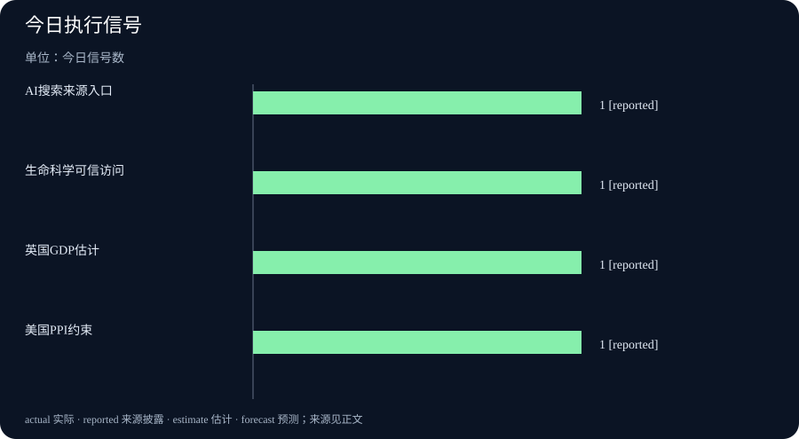

Daily Intelligence｜AI搜索把来源链放到首屏
2026-10-16｜Asia/Shanghai｜早间版。检索锚点为 2026-10-16 07:00:28+08:00，优先回看 10 月 15 日首次公开的一手页面。产品更新、研究资助和宏观统计的发布日期不同，页面未提供统一小时信息，不能据此声称所有材料严格落在 24 小时窗口。
Today’s Thesis｜今天的判断
10 月 15 日的新增信号集中到“来源如何进入工作流”：Google更新 AI Mode 和 AI Overviews，把内联链接、官方网页区域、新闻轮播和创作者资料放到回答周围；OpenAI推出面向美国大学实验室的 GPT-Rosalind Academic Plan，把生命科学模型与可信访问、实验室权限和数据默认不训练绑定；英国 GDP 月度估计则提醒我们，及时数据会修订，服务、生产和建筑的方向并不一致。AI产品、科研访问与宏观数据都在要求用户能回到原始证据。
Executive Summary｜先看三条变化
- 搜索答案增加来源入口：Google宣布 AI Mode 和 AI Overviews 增加更早出现的内联链接、官方站点专区、新闻轮播和创作者资料；可点击来源改善检索路径，但不自动保证摘要正确。Google Search
- 生命科学模型采用可信访问：OpenAI为美国大学实验室推出 GPT-Rosalind 学术计划，最多 30 个标准席位可获 12 个月赞助，模型使用需审批，API 不包含在计划内。OpenAI
- GDP 发布与修订同时发生：英国 ONS 公布 2026 年 8 月 GDP 月度估计，三个月到 8 月实际 GDP 比三个月到 5 月增长 0.7%，并明确后续可能修订；生产与建筑表现弱于服务。ONS
AI Daily｜AI 与产品
Google的搜索更新把来源路径直接放进 AI 回答。官方页面列出四项变化：内联链接更早出现、顶部测试官方网页专区、更多地点和语言中的及时新闻轮播，以及更显眼的相关文章链接。Google还提到 Preferred Sources 使用人数较年初增长超过 7 倍，这是公司披露的使用趋势，不能直接推出用户信任、点击质量或新闻流量增长。Google AI Search
这个设计解决的是“回答之后去哪儿核验”的产品摩擦。若用户能在句子附近看到原文，研究者更容易检查日期、语境和限定条件；但链接数量增加并不能消除摘要漏掉反例、引用与结论不匹配或来源页面过期等问题。搜索产品仍需要显示来源类型、发布时间、是否为官方页面，以及回答哪些句子只是模型归纳。
OpenAI推出 GPT-Rosalind Academic Plan，面向美国大学的合资格实验室，提供最多 30 个 ChatGPT Business Standard 席位，GPT-Rosalind 需通过 trusted-access 审批，研究数据默认不用于训练。计划把生命科学模型、实验室权限、机构验证和生物安全联系人放在同一访问流程中。页面还明确当前不提供 API 使用额度，这意味着实验室可以先在共享工作区评估模型，但不能把学术计划直接当成生产 API 供应。OpenAI Rosalind
Rosalind 页面展示了蛋白质设计、药物化学和文献工作流示例，也展示了一个涉及高风险病原体的请求如何被模型拒绝操作性细节。示例属于供应商整理的演示，不能证明科学结论、实验设计或安全效果已经独立验证。真正的评估仍需看同行复核、实验结果、数据保护和机构责任链。
Business Daily｜商业与产业
搜索产品把来源放在首屏，会改变内容网站和品牌的可见性竞争。官方页面、Preferred Sources 和新闻轮播可能获得更显眼的位置，媒体需要提供清晰作者、发布日期、修订记录和可引用段落，才能让用户在 AI 摘要旁边完成核验。曝光增加不等于点击、订阅或广告收入增加，平台仍可能改变轮播和链接排序。
GPT-Rosalind 的学术计划把“免费席位”与审批、机构资格和 12 个月期限绑定。对实验室来说，短期节省软件费用并不等于总成本下降：研究数据整理、权限管理员、模型输出复核、实验重复和离开计划后的迁移都需要资源。没有 API 额度也限制了自动化规模，计划更接近受控试用和研究支持，而不是无限制的生产部署。
AI 采购因此出现两条并行指标：一条是模型能否提高发现速度，另一条是组织能否保存证据并承担错误。生命科学、法律、金融和政府项目都需要版本锁定、日志导出、撤销权限和事故通报。供应商给出“帮助研究”的案例时，买方应追问实验对照、失败样本和独立评测，而不是只比较演示时长。
Macro Observation｜宏观观察
英国 ONS 的 8 月 GDP 月度估计显示，月度 GDP 比 7 月增长 0.1%，三个月到 8 月比三个月到 5 月增长 0.7%；服务在三个月口径增长 0.9%，生产下降 0.2%，建筑下降 1.0%。ONS同时说明早期估计可能修订，并已纳入更长时间序列的修订。这组数据说明“增长”与“增长由谁贡献”必须同时写入分析。ONS GDP
美国 BLS 页面列出 10 月 15 日 PPI 发布，最终需求价格 9 月上升 1.3%，过去 12 个月上升 6.3%；这些数字对应 9 月参考期，不能直接称为 10 月成本变化。企业评估 AI 算力、云服务与设备投资时，需要区分生产者价格、消费者价格、工资、资本开支和合同传导的时间差。BLS
宏观数据与 AI 采用之间的关系也不是单向的。若搜索和科研代理提高工作效率，企业可能减少部分检索时间；但数据中心、电力、合规和人工复核支出也会增加。GDP和PPI只能提供背景约束，不能直接证明某个 AI 工具带来了生产率或利润改善。后续要看企业披露、行业调查、人员结构和单位成本。
Signal Dashboard｜信号仪表盘
| 信号 | 今日事实 | 边界 |
|---|---|---|
| 搜索来源入口 | Google更新内联链接、官方网页专区和新闻轮播 | 来源可见不等于摘要准确 |
| 学术模型访问 | GPT-Rosalind计划提供受审批的实验室访问 | 美国大学资格，且不含API额度 |
| 经济增长结构 | 英国三个月到8月GDP增长0.7%，服务增长、生产和建筑下降 | 月度估计可能修订 |
| 价格传导 | BLS列出9月PPI同比上涨6.3% | 参考期是9月，不是实时10月成本 |
Deep Insight｜深度观察
来源链正在成为 AI 产品的核心界面
过去，搜索产品把链接当作回答后的补充；现在，Google把官方网页、新闻轮播和内联链接放到回答结构里。这个变化会提高用户回到原文的机会，也会让来源选择直接影响产品体验。用户在阅读一段 AI 摘要时，首先要知道这句话来自哪种材料：官方公告、新闻报道、研究论文、个人创作者还是平台自己的总结。来源类型如果被隐藏，链接再多也可能只是视觉上的确定感。
对于出版者，来源链意味着文章需要更适合机器引用和人类复核。标题、日期、作者、修订时间、原始数据和限定条件应保持清楚，重要数字要能跳回原文表格。对于 AI 平台，链接目标的选择、页面是否仍可访问、摘要是否保留反例，都应成为质量评估的一部分。点击率可以衡量兴趣，却不能代替引用准确率。
GPT-Rosalind 学术计划把来源链扩展到实验室治理。模型是否可以使用，取决于机构、PI 或实验室负责人、可信访问审批和生物安全联系人；数据默认不用于训练也要结合机构政策理解。这样的设计降低了部分进入门槛，却没有移除实验责任。研究人员仍需确认文献版本、模型是否混淆预测与实测值、输出能否被其他专家重复检查。
两个产品方向看起来不同，但共同要求是把“可用”拆成多层：能否发现相关资料，能否正确引用，能否提出可复核的中间步骤，能否在错误时暂停，能否把结果交给专业人员。若只发布终点答案，用户无法判断系统到底在哪一步失败。专业 AI 的竞争会越来越像工作流竞争，而不是单轮问答竞争。
宏观数据提供了一个相似的校验框架。英国 GDP 的初值、修订和行业分解说明，一个 headline 数字可能随着新数据变化；BLS PPI 的参考期则说明发布日期与成本感受之间存在时滞。企业在计算 AI 项目的回报时，也应把发布日演示、试点期间、会计确认和长期留存分开。否则，短期访问量容易被误写成生产率，成本下降容易被误写成利润。
接下来应追踪三类结果：搜索产品是否提供来源质量和时间标签，学术模型是否公开机构使用与复核案例，宏观压力是否进入云、芯片、数据中心和研发预算。只有当这些结果在多个时期和不同机构重复出现，今天的产品公告才会变成可依赖的行业信号。
Tomorrow Watch｜明日值得追踪
- Google AI Search 的官方网页专区、新闻轮播和 Preferred Sources 是否提供来源时间与类型标签。
- GPT-Rosalind 计划是否公布更多实验室使用、模型局限和可信访问审查细节。
- 英国 GDP 后续修订是否改变生产、服务和建筑的贡献分解。
- PPI、工资和云服务合同是否共同显示 AI 基础设施成本的传导。
- 内容出版者如何在 AI 摘要旁保留作者、日期、修订记录和原始证据。
One Chart｜一张图
本期图表只统计 10 月 15 日官方页面明确出现的四类信号，每类计数为 1，不代表市场份额、准确率或财务回报。

Quote of the Day｜今日引用
“We’re updating AI Mode and AI Overviews with clearer inline links, context about sources, timely articles and more to help you explore the best of the web.”
— Hema Budaraju，Google Search 产品公告。出处
中文：我们正在更新 AI Mode 和 AI Overviews，提供更清晰的内联链接、来源背景和及时文章，帮助用户探索网络。这是产品目标表述，不是对来源准确率或搜索结果质量的独立证明。
Action Items｜今天值得思考什么
- 来源能回到原文吗？ 为 AI 摘要记录原始页面、发布日期、作者、修订时间和关键限定条件。
- 访问是否可审计？ 在学术模型试用中保存机构审批、成员权限、数据处理和模型版本记录。
- 增长由谁贡献？ 阅读 GDP 时同时记录服务、生产、建筑分解和后续修订，不只引用 headline。
- 成本何时传导？ 把 PPI、工资、云服务合同和算力采购的参考期间分开，避免把9月数据当成10月实时价格。
- 结果能复现吗？ 要求 AI 试点提供失败样本、人工复核、独立评测和持续留存指标。
信息边界
本报告以 2026-10-16 07:00:28+08:00 为编写锚点，优先使用 10 月 15 日公开的 Google、OpenAI、英国 ONS 和美国 BLS 页面。Google与OpenAI页面包含公司产品目标和资格条件，不能替代独立评测；英国 GDP 是 2026 年 8 月参考期的月度估计，BLS PPI主要对应 2026 年 9 月，均不能冒充 10 月 16 日新发生的经济事实。